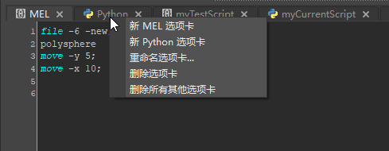

打开“脚本编辑器”(Script Editor)
- 在主菜单栏中：
- 在视口中：
- 通过单击 Maya 右下角的
 。
。
使用“脚本编辑器”(Script Editor)可以在“MEL”或“Python”选项卡中键入单行或多行脚本，并可以在历史窗格中查看输出。
历史（顶部）窗格显示命令的历史及其结果。
在输入（底部）窗格的“MEL”或“Python”选项卡中，键入命令和脚本。
每个选项卡上会显示一个 MEL 或 Python 图标来表示其语言，因此您无需选择它们即可区分 MEL 和 Python 选项卡。
如果创建自己的自定义选项卡，则可以将自己的图标添加到选项卡，而无需使用标准 MEL 或 Python 图标。有关详细信息，请参见 tabLayout 命令以及 tabIcon 和 tabIconIndex 标志。
如果将您的脚本保存到工具架，则可以对在工具架上创建的选项卡执行相同的操作。有关详细信息，请参见 shelfTabLayout 命令、tabIcon 和 tabIconIndex 标志以及为脚本创建工具架按钮。
运行脚本的步骤
若要在输入窗格中执行脚本，请执行以下操作之一：
- 按数字键盘上的 Enter 键
- 选择。
- 选择要执行的文本，然后按 Ctrl+Enter。
提示： 在 Windows 中，可以更改“脚本编辑器”(Script Editor)顶部或底部窗格中文本的字体大小。
选择“脚本编辑器”(Script Editor)的输入或历史窗格（在窗口中单击），然后按住 Ctrl 键并使用鼠标中间的滚轮进行滚动。
滚动时文本将变大或变小。
创建、关闭或重命名选项卡的步骤
执行下列操作之一：
-
从“选项卡”(Tabs)菜单中选择所需的选项。
注： 以前，这些选项可从“命令”(Command)菜单中获得。 -
在选项卡上单击鼠标右键，然后从可用选项中进行选择。
 -
在输入或历史窗格上单击鼠标右键，然后从标记菜单中选择所需的选项。
-
使用热键。请参见“脚本编辑器”(Script Editor)菜单和热键中的“选项卡”部分。
- 在选项卡上单击鼠标中键以将其关闭。
命令亮显(Command highlighting)
当您在“脚本编辑器”(Script Editor)中输入命令时，相应的所有命令都将亮显。